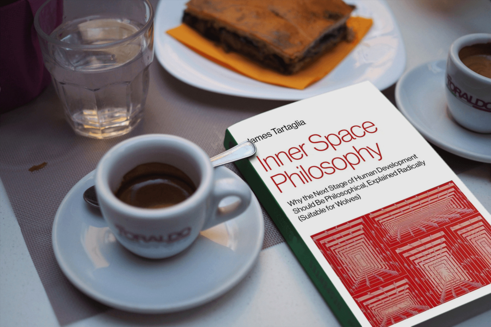

James Tartaglia: Inner Space Philosophy
Book review
Tartaglia’s sometimes uneven exploration of how philosophy could be popularised by introducing more varied forms of philosophical storytelling to it is hugely amusing and entertaining at places, but it also has parts that don’t quite live up to its promise.

Tartaglia, James (2024). Inner Space Philosophy. Why the Next Stage of Human Development Should Be Philosophical, Explained Radically (Suitable for Wolves). IFF Books. 282 pages. Kindle: 14.99 USD, Paperback: 22.95 USD. Get your copy here: Amazon US — Amazon UK — Publisher’s website
If you like reading about philosophy, here's a free, weekly newsletter with articles just like this one: Send it to me!
The book
It took me a long time to make up my mind about whether I should review this book or not. On the one hand, it is an interesting book in places, and fun to read. On the other… well, read on.
This book makes a case for the next stage of human development being philosophical, that is, for the human race to become a philosophical people. … The philosophical awakening I envisage, however, will obviously not result from a change of consensus in the increasingly marginalised discipline of academic philosophy. Something much, much bigger would have to happen before a widespread philosophical awakening could possibly come to seem like a practical and prudent goal. Well, as it so happens, something of that much, much bigger kind is indeed going to happen before very long: thoughtless technological development will transform human life in the 21st century in some manner or another, that much is for sure, and based on the current evidence, I and many others think the most likely direction of travel is to inner space. I want philosophy to reinvent itself so that it can follow us inside. I think we will need it there in abundance, and I have written this book to inspire thought along these lines.
These sentences from the first pages of the book already hint at both its good and its more problematic aspects.
First, this is not a shy, meek, or humble book. The author is out to change philosophy forever. In one chapter towards the end of the book, he imagines a scene taking place in the far future:
It was spring 3389 in London, England, Earth, Sol, in the UH C-Space (the common space of the United Human virtual reality). Zemina was pacing up and down in her glass-walled penthouse apartment, looking and feeling irritated as she repeated to herself the following statement: “Tartaglia’s true message was a summons to authenticity, but not for them. It was a visionary call out to his distant descendants — he was calling out to us!” She abruptly halted and picked up the beautiful hardback copy of Inner Space Philosophy which had been resting on her blue crystal table…
You have to admire the self-confidence of someone who sees his book being discussed by people 1350 years into the future. Projecting this to the past, it’s like us talking about a book of the year 674. Well, yes, we do talk about many books that are much older – but if this book is the one future humans will be talking about a thousand years hence, then the future surely will have a problem.
You may say that it’s just a satirical passage – a self-referential joke. But it’s not. The whole chapter is about a virtual philosophical discussion between two fictional, AI-generated philosophers, one attacking and one defending Tartaglia’s ideas in that far future. The discussion is obviously trying to anticipate the criticism that the author expects from his professional colleagues – and to provide replies.
But here you see the next problem of the book’s concept: it is incredibly long-winded at places, and for no good reason. If the author wants to discuss the counter-arguments to his thesis, why can he not just do that directly? Why do we need to first read four (!) pages that set up that future debate, including the personal and professional backgrounds of four characters, and only then get to the discussion of the actual points of criticism?
And the same happens throughout the book. I had to skip ahead multiple times in order to get through the more tedious and cute parts. Fortunately, much of the book is not actually necessary in order to get its point. But then, why not leave all that fluff out in the first place?
The book is indulgent, and not always in a good way. You know the song: “It’s my party, and I’ll cry if I want to.” Well, it’s his book and he can do what he wants to within its pages. But, reading it, one often thinks that he might have done a better service to his cause by tightening the thing up a bit.
The author
According to his Wikipedia page, James Tartaglia started playing the saxophone as a child, then studied music for a year, switched to economics and later to philosophy. I can sympathise with that. I myself studied in those golden old days when universities were places for the leisurely cultivation of one’s interests, rather than breeding stations for standardised business homunculi. I started with law (which my father wanted), changed to German literature and chemistry (which nobody wanted), and ended up graduating in philosophy and biology (which finally turned out to be what I wanted).
Now Tartaglia is a professor of Metaphysical Philosophy at Keele University and still plays Jazz, which he tries to fuse with philosophy. This is important for the understanding of this book: this is not the book of a narrow-minded career philosopher, but of someone who sees himself as a practising musician and artist, in addition to being an academic.
Your ad-blocker ate the form? Just click here to subscribe!
Content
The book is, as I have already said above, quite chatty, bordering on rambling, with little organisation and much filler that does not seem to contribute to its main argument. The table of contents gives a first indication of that:
- Introduction: Imagination and Presentation
- Chapter 1: Everyday Life Is Real
- Section 1: Appearance, Reality and Lip Service
- Section 2: Is Death the Answer?
- Section 3: Materialism and Anti-Philosophy
- Section 4: Communist Materialism Lost, Invisible Materialism Won
- Chapter 2: Thoughts Not Stories
- Encounter 1: Plato
- Encounter 2: Plotinus
- Encounter 3: Xuanzang
- Encounter 4: Nana Abena Boaa
- Encounter 5: F.H. Bradley
- Encounter 6: Zemina
- Chapter 3: Destiny and the Fates
- [Seven sections omitted]
- Chapter 4: The First Thinker of the Meaning of Life
- [Ten sections omitted]
- Chapter 5: Gambo Lai Lai the Cynic
- [Seven sections omitted]
- Chapter 6: Once More with Feeling
- [Eight sections omitted]
This makes a total of 42 sections, many of which are further divided into unnamed subsections. Sometimes these can be as short as one line or one single word:
… They seem to encapsulate something people want, but what?
§
Purpose.
§
But not just any purpose — a slave has a purpose for the slave owner, and nobody wants that kind. …
These paragraph signs here are subsection breaks. I don’t see that structuring a book like that serves any actual purpose, strengthens its argument, or makes it easier to read. Creating a separate subsection for the word “purpose” instead looks pretentious and somewhat silly.
But back to the book’s message. What I understand to be its main point is that academic philosophy should stop being so academic and instead try to become more relevant and accessible by embracing more human, artistic, narrative, fiction-based ways of presenting its thoughts. This is, of course, not a new idea. Camus and Sartre wrote philosophy this way, Heidegger did it in his own way, by redrafting the German language and building his philosophy upon word associations, and, of course, Plato did it with his dialogues.
But the main problem I see is that we already have exactly what Tartaglia is proposing to create with his manifesto for a changed philosophy: it’s called literary fiction. Authors of literary books have always given us not only fictional plots, but also philosophical ideas and treatises about love, about the human condition, about death and the shortness or the futility of life. It is indeed hard to find a work of literature that does not engage in philosophical speculation at some level. From Tolstoy to Hesse to Hemingway and even Dan Brown, our stories of fiction are always also inquiries into questions of good and bad, of crime and punishment, life and death, happiness and misery.
When Tartaglia argues that we should abandon the way we write philosophy and do it the way fiction writers do, then one is tempted to ask: Why on earth should we do that? If he, or any other philosopher, wants to write fiction, or make movies, or play the saxophone, they are already able to do so. Everyone is welcome to go and write a philosophical novel, if that’s what they desire. But why is it necessary, or even a good idea, to abandon the form of the scholarly philosophical essay entirely and replace it by literary fiction? Why can we not have both?
Style
Reading the book, I had the feeling that it falls apart into two different kinds of narrative: one good and one bad. The good one were the entirely fictional parts. Tartaglia is a good storyteller and the most entertaining parts of the book are those where he stops preaching and just goes off into an enjoyable piece of pure fiction.
For example, chapter two (see the table of contents above) is a series of encounters with past philosophers, told in the first person by each philosopher. For example, here is Plato speaking about Socrates:
With the philosophical life now before my eyes, I developed very quickly. I became one of the gang who followed him around. He didn’t want to teach us; you could tell because he never objected when Xanthippe chased us off with a stick. No good teacher ever wants to teach, just as no good ruler wants to rule — but Socrates knew it was his duty. He told me how proud he was of my development, how he thought I’d become a great philosopher, and I’m pretty sure he didn’t say that to the others.
One can see Plato’s whole personality in these lines – a fictional one, of course, but no less vivid. His desire to be accepted by his teacher, to be preferred over the other students.
The language in these first-person accounts is gripping, the images lively, the voice convincing and forceful. Here Plato tell us what he thinks of Democritus:
There’s a problem with the power of books that’s even worse than the chance the good ones will be misused. It’s the bad ones. That fellow Democritus, he really is the worst, but his books are everywhere. I’d be doing the world a favour if I set my students the task of buying them all up and burning the lot. Can you believe that someone who styles himself a philosopher would set out to reinforce the most ignorant prejudice of mankind? “Oh yeah, I can pick it up in my hands, it’s solid to the touch, it’s real” — it doesn’t get much dumber than that.
In total, there are about 90 pages of these first-person “encounters” in the book, and, in my opinion, they are the best part of it. They are funny, lively, and, although they are of questionable historical authenticity, they are good fun. About one of them, a 17th century queen from Ghana, Nana Abena Boaa, nothing at all is known – so the author is free to entirely make up a female African philosopher of that period under that name. And one, the Zemina we already met above, is a future philosopher from the 3300s, one who lives in the world that Tartaglia envisions as the ideal philosophical universe.
Now I’m ready to bet my life that there will be no humans in existence in the 3300s, and we’ll be lucky if anything else is alive on earth, but Zemina’s philosophical monologue is still amusing.
Another “encounter” comes later in the book, in chapter 5, where we meet a person called “Gambo Lai Lai the Cynic”. This is a partly fictional character, but seemingly inspired by a real person (?), who lives a life similar in many respects to that of Diogenes in his barrel, only in the 1930s and 40s in Port of Spain, the capital of Trinidad.
The reconstruction of that street philosopher, his views, his character, his mannerisms and his language are enchanting:
The business with Gloria completed, he stepped out into the street, wearing a perfectly pressed morning suit and the carnival crown still wedged on his head. Lighting a cigar, he threw back his crowned head, paused a while to enjoy the sun on his face, then shouted out as loudly as he could: “Gambo Lai Lai has set Gambo Lai Lai free!”
“Where you gonna live now, doodoo-darling?” asked Gloria, who was standing in her doorway, looking bemused. Gambo ignored her.
“Gambo Lai Lai has set Gambo Lai Lai free!” he repeated, quietly this time, then he strode away purposefully in the direction of the dockyard. … He was looking for the giant oil drums that he’d heard had been washed up from the wreck of an American ship — enormous great things, twice as tall and wide as a standard 55-gallon oil drum. There were three of them lined up at the far end of the docks, and with great effort, Gambo pulled one crashing down onto its side — it rolled only a little, since it was so heavy, before coming to a rest. Gambo climbed inside.
“To roam Giddily, and be everywhere but at home, such freedom doth a banishment become,” he muttered to himself, quoting John Donne, as he sat in his oil drum and looked out to sea.
I could read such descriptions for hours, and this chapter, another 40 pages, is beautifully written, strong, evocative, and forcefully brings that unique character to life.
But reading on, beyond these parts, one finds oneself mired again in some half-baked parable or some diatribe that drags on for too long and provides no insight, except perhaps that every book really needs a good editor.
Chapter 3 is an example of almost 30 pages that are completely unreadable, in my opinion. It’s a tiring treatise on fate and destiny, which goes like this:
“Know thyself” is out of fashion, more’s the pity, because the operative philosophy of our world, materialism, is only comfortable with outer space—it views inner space as a problem at best, at worst an enemy to be eradicated … like religion. In the pro-public and anti-private intellectual atmosphere which this creates, the only officially mandated way to “know thyself” is to ask others. … Psychiatry hasn’t aged well—materialist culture won’t endorse it anymore, or only with caveats and no great enthusiasm. The problem is the fundamental one that the monsters live in inner space — the Freudian unconscious is not nearly unconscious enough for materialist metaphysics. These days, if you’re really serious about knowing thyself then you need to learn from teams of psychologists testing people en masse, finding out about our prejudices, our cognitive biases, how terribly flawed human thinking is.
Honestly, it’s a slog to read one’s way through thirty pages of this. The insights are not insightful enough to be worth the work, the language is uninspired, and one feels that the author himself was not quite sure what he was doing here or why these sections should be in the book.
Perhaps more generally – we have seen three books recently that attempted something like that: Christopher Hamilton’s “Rapture,” Tim Morton’s “Hell,” and Tartaglia’s book. It’s instructive to compare them briefly. Hamilton has many ideas that are inspiring and worth reading, but he tries to pack too many ideas into one page, or even one paragraph, leading in the end to a book that often seems superficial and that lacks a deeper treatment of its topics. Morton creates his own associative universe, entirely giving up on intelligibility in places, but his language is magical and the images he conjures are so lively and unique that one cannot stop reading, even if one does not understand much of it in a rational sense. Like reading Paul Celan, the truth of Morton’s book is a literary truth, the revelation that follows a prayer, and not something to (always) be rationally grasped.
The good parts of Tartaglia’s Inner Space Philosophy are enjoyable biographical sketches, for the most part fictional, but beautifully told and memorable. True “encounters,” as he calls them. But the boring parts lack the inspiration and the force of Morton’s prose, and they also fall short of the insights and the associative connections that Hamilton is able to conjure.
Perhaps some of you remember S. Morgenstern’s “Classic Tale of True Love and High Adventure,” The Princess Bride. Like William Goldman’s edition of only “the good parts,” one wishes that there was an edition of Inner Space Philosophy that contained only those.
The book’s argument
In the end, the fundamental problem of the book, in my opinion, is its core argument. I am not sure what it actually is.
If the desired conclusion is: “We should write philosophy as if it was literary fiction, because this would make philosophy more relevant,” then this is a good point. But it’s also not terribly original. Literary fiction that contains philosophical ideas, or philosophy written in the form of stories (or plays, or movies) have both been around since the ancient Greeks and are still going strong. Hollywood blockbusters are often philosophically inspired: The Matrix, Inception, Star Wars, Spielberg’s AI and an endless list of other movies that explore philosophical questions in more or less detail and depth.
If, on the other hand, Tartaglia aims at: “We should stop doing ‘academic’ philosophy entirely, and write philosophy only as stories and movies,” then I don’t see why we would want to do this. Why should we forbid the writing and publication of scholarly articles, if there are both philosophers who like to write them and an audience who will read them? I’m obviously not the type who would read a scholarly journal for fun, and this is why I’m here right now, writing this, instead of ruining my Sunday by reading something in Synthese, but if that floats your boat, why would I want to stop you?
Apart from that, about half the book are the (semi-fictional) biographies of the various philosophers. If you enjoy this kind of thing, it’s worth getting the book for these chapters alone, which are well-written, entertaining, and sometimes even brilliant.
◊ ◊ ◊
Get your copy here: Amazon US — Amazon UK — Publisher’s website
Thanks to IFF Books for providing me with a free review copy of the book.